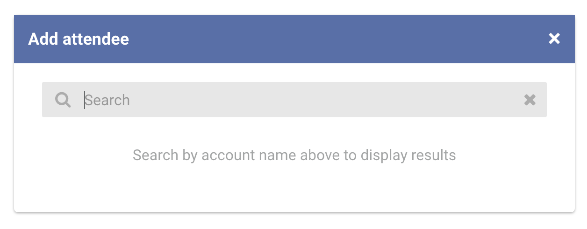
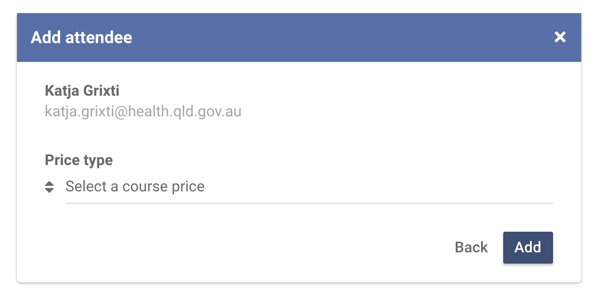
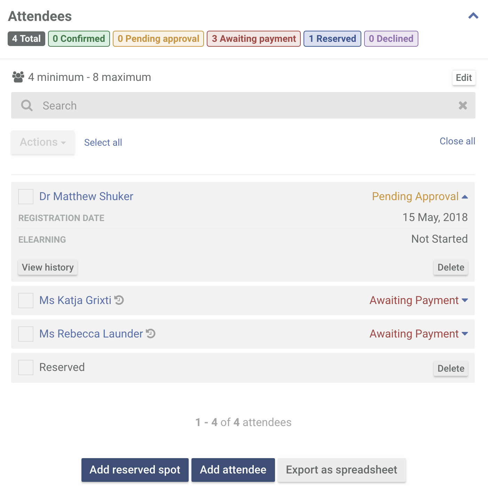
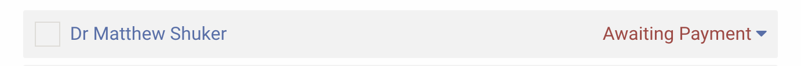
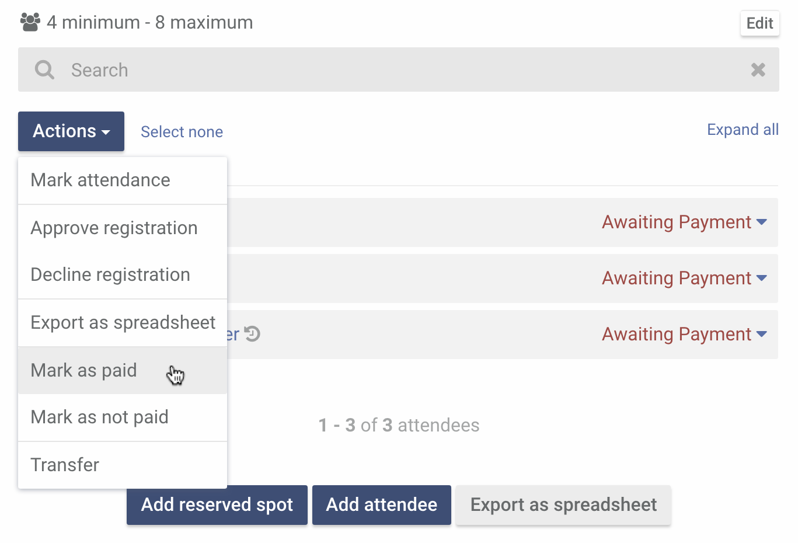
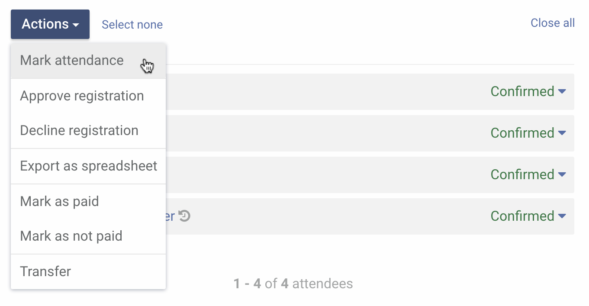
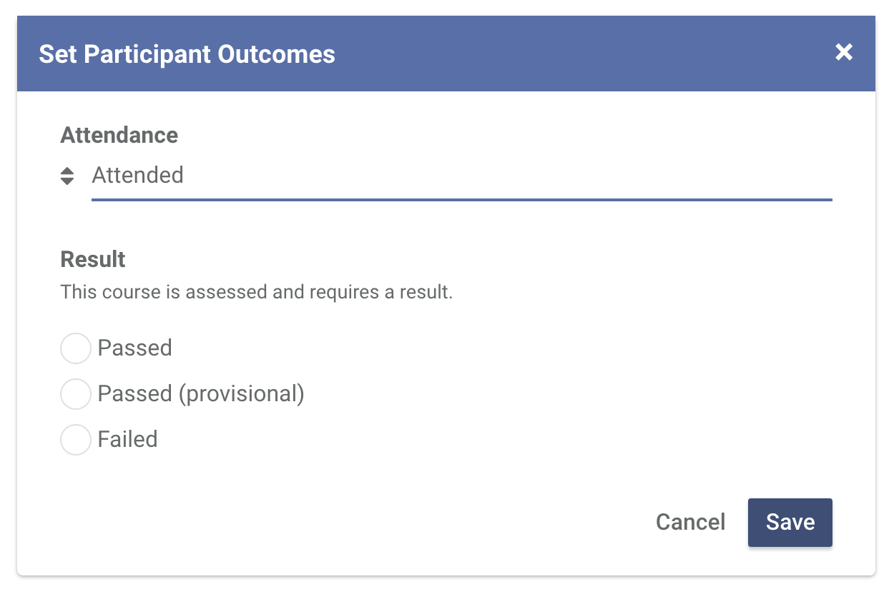
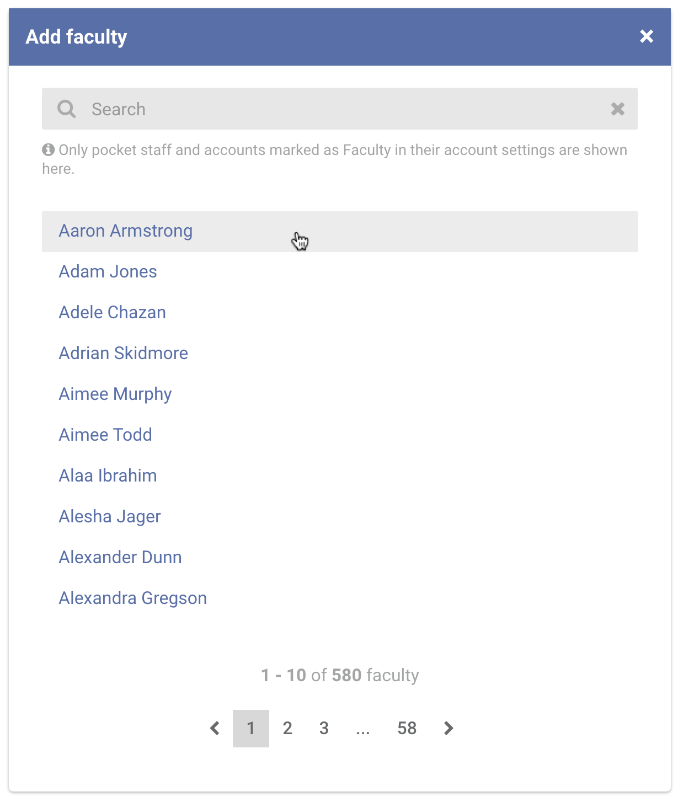
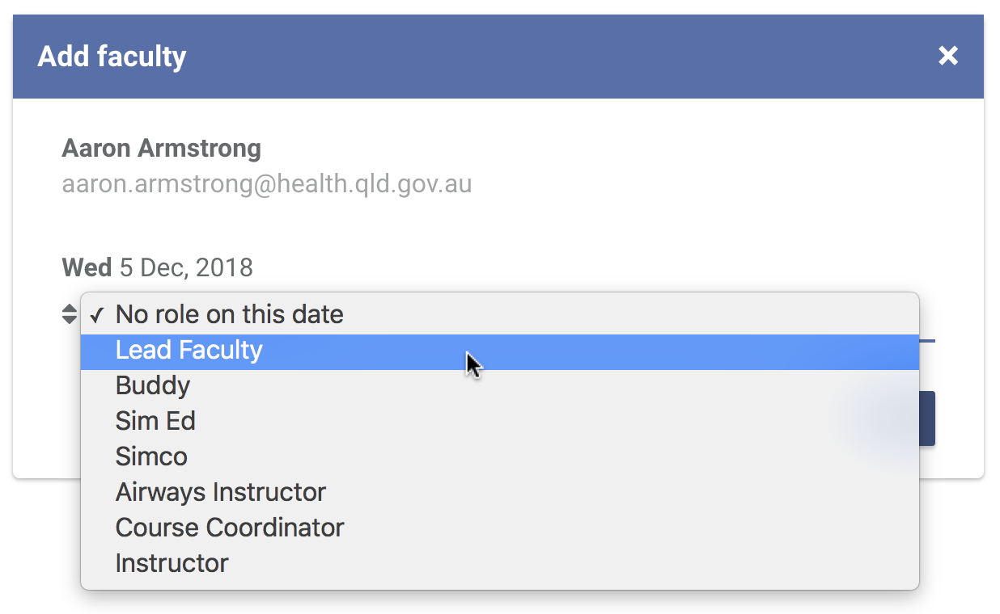
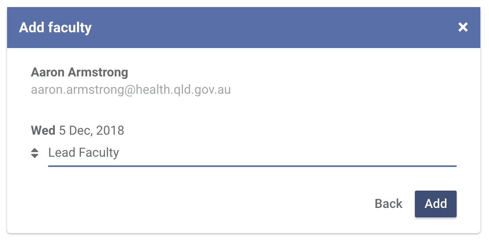

Managing attendees
As soon as a course booking is created, it will be available for registration.
-
Adding an attendee manually
In situations where you may have to add an attendee manually to a booking, make sure that the attendee has an account with CSDS first.
To add an attendee manually, click Add attendee

In the popup that appears, enter the name of the attendee you want to add.
Click the attendee's name in the results area to add them in the booking.

Choose a course price for the attendee you are adding. Then click Add.
And you're done. Just take note that an attendee that has been added manually goes straight to Awaiting payment.

-
Approving course registrations
When someone registers for a course, they receive an email that they need to be approved first. Your Pocket Centre contact also gets an email every time someone registers for any of your Pocket Centre courses.
Learn how to update your Pocket Centre contact details.
This is how an attendee who needs approval appears in the attendees section.
To approve a registration, select the attendee you are approving.
Yes, you can select multiple attendees at once.
Then click Approve registration.

Once an attendee is approved, they will get an email letting them know that someone from your Pocket Centre will contact them to arrange payment. That attendee's booking status will change to Awaiting Payment.

Can I decline an attendee's registration?
Yes. Just select the attendee you want to decline. From the actions dropdown, click Decline registration. An email is sent to the attendee informing them about this action.
Can I approve someone that I declined before?
As long as the course is not yet full, yes you can. If an attendee has previously been marked as Paid, their status will go from Declined to Confirmed right away.
-
Marking an attendee as paid
Marking an attendee as paid confirms their booking to the course. Once marked, they get an email confirming their registration with the details of the eLearning (if applicable) and their face-to-face course.
To mark an attendee as paid, select the attendee you want to mark.
From the actions dropdown, click Mark as paid.
Their status should change from Awaiting Payment to Confirmed.

Can I mark an attendee as not paid?
Yes. Select the attendee you want to mark as not paid from the list. From the actions dropdown, click Mark as not paid. No email is sent to the attendee when you do this.
-
Deleting an attendee
To delete an attendee, expand the attendee you want to delete and click Delete.

A popup will appear that will ask you to confirm the action. Click Delete to confirm the action. No email is sent to the attendee when you do this.
Can I add an attendee that I have deleted before?
Yes. Please refer to Adding an attendee manually.
-
Reserved spots
Reserved spots are used to limit the number of attendees that can register to the maximum number of attendees minus the reserved spots. Remember that a reserved spot is considered "confirmed".
Only add a reserved spot if you can guarantee that the attendee will pay.
To add a reserved spot, click Add reserved spot.

The reserved spot should appear at the top of the list. To remove a reserved spot, just select a reserved spot you want to remove then click Delete. This action will immediately remove the selected reserved spot.
-
Exporting attendees list
To export a list, select the attendees you want included and from the actions dropdown, click Export as spreadsheet. This will download a CSV file that you can open in your preferred spreadsheet software.
Here's a sample of what the spreadsheet contains:

-
Marking course outcomes
Course certificates are generated only when attendee outcomes are recorded. eLearning certificates are generated automatically when the attendee completes them and can be accessed through their own account.
Marking course outcomes is a two-step process. The first step is to record an attendee's attendance. To do this, select an attendee and from the actions dropdown click Participant outcomes.
In the popup that appears, select whether the attendee has attended or not. Then click Save.

If an attendance is marked, a course outcome also has to be recorded. Comments are optional. Click Save to set the attendee outcome.
Depending on the course, the options available are Passed, Passed (Provisional) and Failed.
Upon saving, attendees who passed (including the provisional) will get access to their course certificates thru their accounts.

-
Adding faculty
Adding faculty is a great way to roster schedule and availability of your staff in the Pocket Centre. Note that all faculty must have an account with CSDS and have the Faculty role.
Contact us if you can't find a faculty in your list.
To add a faculty, click Add faculty.

In the popup that appears, click the name of the faculty you want to add. You can navigate through the list or use the search bar to filter the results.
Select the faculty's role for all the days of the course.
Click Add to save the record.
Repeat the process to add more faculty. To remove a faculty click Remove. Take note that removing a faculty in a booking, does not delete their account.